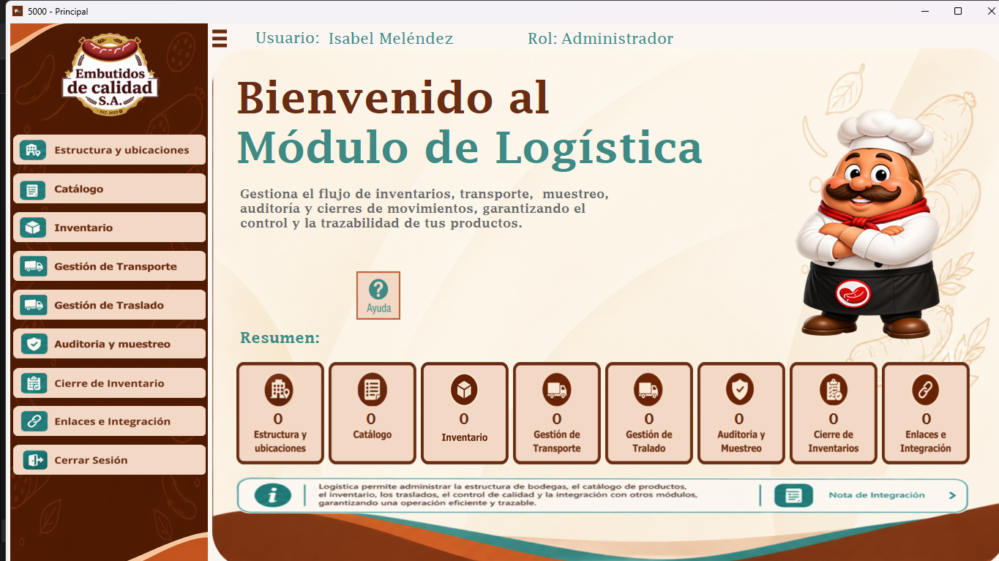
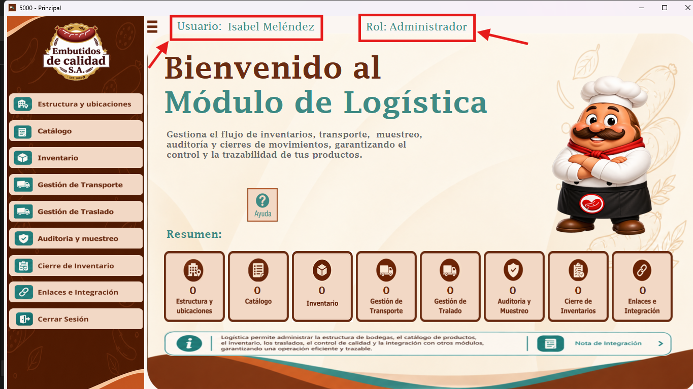
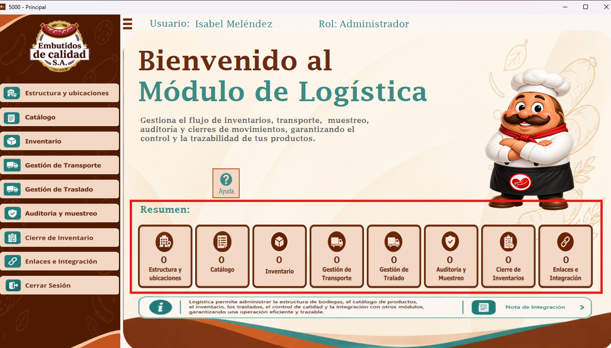
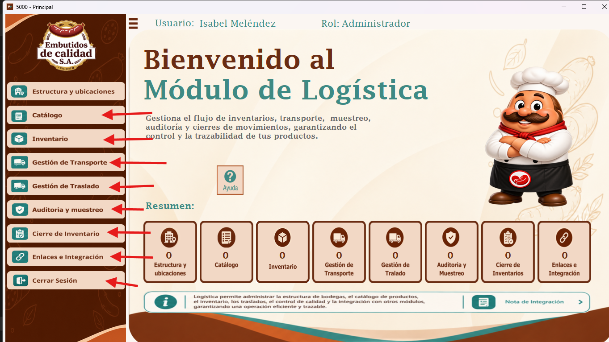
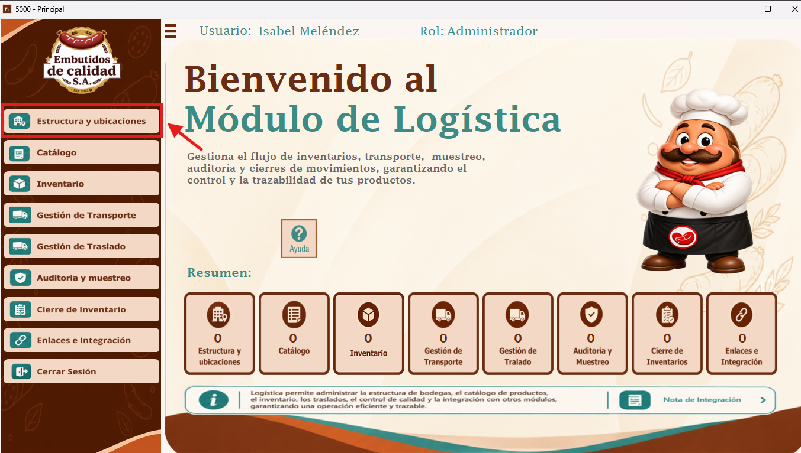
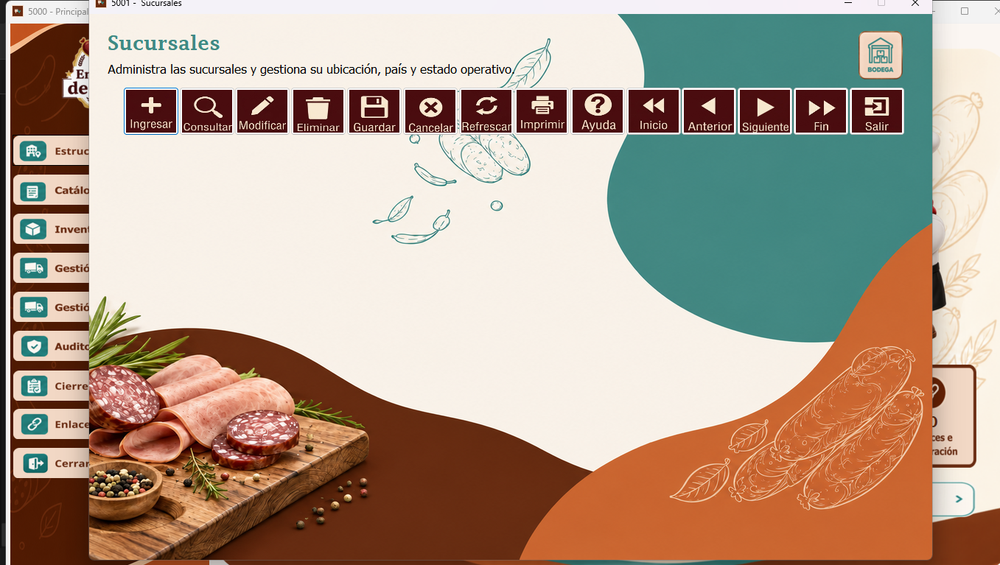

Al ingresar al módulo de Logística, se muestra la pantalla principal de bienvenida. Desde esta ventana se pueden consultar las distintas áreas disponibles y acceder a sus formularios.

Para acceder al módulo, es necesario haber iniciado sesión. En la parte superior de la pantalla se muestran el nombre del usuario y el rol con el que ingresó. Esta información permite identificar la sesión activa y los permisos asociados.

En la sección «Resumen» se presentan los indicadores de las diferentes áreas de Logística, que permiten visualizar de forma general la información registrada hasta el momento.

En el lado izquierdo se encuentra el menú para acceder a las distintas secciones del módulo, como Estructura y ubicaciones, Catálogo, Inventario, Gestión de Transporte, Gestión de Traslado, Auditoría y muestreo, Cierre de Inventario y Enlaces e Integración. También está disponible la opción «Cerrar Sesión».

Para abrir una sección, se hace clic en la opción correspondiente del menú lateral. Por ejemplo, al seleccionar «Estructura y ubicaciones» se accede a la ventana relacionada con esta área.

Al seleccionar la opción, se muestra la ventana correspondiente. En el ejemplo, se abre el formulario de Sucursales, desde el cual se pueden realizar las operaciones disponibles en esa pantalla.
